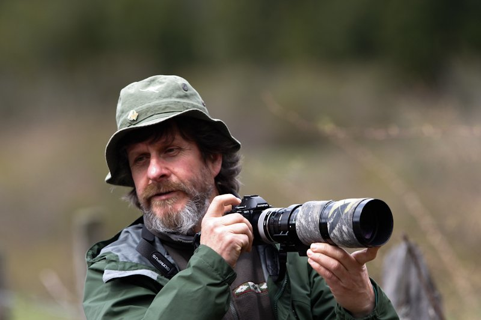

Fotógrafo • Documentalista • Realizador Audiovisual
En memoria de su legado en La Araucanía, Chile (1954 - 2023)

Juan Carlos Gedda Ortiz (Temuco, 23 de septiembre de 1954 - Villarrica, 22 de noviembre de 2023) fue un fotógrafo, documentalista y productor audiovisual chileno.
Fue cocreador y colaborador de proyectos televisivos como "Al Sur del Mundo", "Bajo la Cruz del Sur" y "Chile, un territorio Al Sur del Mundo", como director y codirector de numerosos documentales, por los que recibió variados premios y reconocimientos. Además, participó como realizador en la serie "Frutos del País". Ejerció como docente en la Escuela de Comunicación Audiovisual de la Universidad Mayor y en el Departamento de Antropología de la Universidad Católica de Temuco.
Obtuvo el Premio del Público en el Festival de Sondrio (Italia) de 1995 con su documental Torres del Paine, las montañas azules; y también ganó el Premio Pudú en el Festival Internacional de Cine de Valdivia de 1999, con su documental Dominga Neculman, Alfarera Mapuche. Con el documental Las Falkland-Malvinas obtuvo el segundo lugar en el Festival Imagen do Natura de Sao Paulo, en 1996. En 2004, fue miembro del Consejo de las Artes y la Industria Audiovisual del Consejo Nacional de la Cultura y las Artes, y en 2009 impulsó la creación de la Asociación Gremial de Trabajadores del Audiovisual y el Cine de La Araucanía, donde se convirtió en su primer presidente. En 2011 recibió el Premio Enrique Eilers, por su destacada trayectoria y por su labor como maestro formador de nuevas generaciones de realizadores audiovisuales.
Entre sus obras destacadas se encuentran Los Hombres del Cochayuyo, considerado un importante aporte para el documental etnográfico y la preservación de la memoria y cultura del litoral de la región de La Araucanía en Chile, y La Antigua Ruta al Puelmapu, donde se reprodujo parte de las rutas utilizadas por el pueblo Mapuche para cruzar la cordillera de Los Andes hacia Argentina, las que habían sido descritas por el Lonko Pascual Coña.
Otras de sus obras relevantes fueron: Los pescadores de más afuera, Las Loceras de Quinchamalí, El torneo campesino de Tres Hijuelas, Los juegos chilenos de Septiembre o La Guitarra Chilena en la Araucanía, documentales donde manifestó su profundo compromiso con la vida de las personas y los oficios de un Chile vinculado a sus entornos naturales y menos visibilizados por la cultura mediática local y nacional.
En 2004, bajo TAIRA Producciones, desarrolló la obra audiovisual "La vida y la muerte de Cisne de Cuello Negro", definido por su autor como "un ensayo poético de imagen en movimiento, música y poesía", iniciativa que contó con el apoyo del Fondo Nacional de la Cultura y las Artes. La música original fue compuesta por el músico chileno Cristián López, y los poemas inéditos escritos y vocalizados por los poetas de La Araucanía Elicura Chihuailaf, Guido Eytel, Jaime Luis Huenún, Leonel Lienlaf, María Isabel Lara y Cristian Lagos.
En su carrera como fotógrafo, en 1975 se incorpora al programa "Vida Silvestre" de la Corporación Nacional Forestal de Chile, liderando la unidad de fotografía e impartiendo charlas educativas y realizando archivos fotográficos sobre flora y fauna endémica para los Parques Nacionales de La Araucanía. Entre los años 1977 y 1979, se desempeñó como encargado de la unidad de fotografía del "Centro de Televisión Educativa TV DACTA" en Caracas, Venezuela. Como fotógrafo, realizó diversos reportajes fotográficos naturalistas para visibilizar y promover la conservación de especies nativas del mundo natural, animal y humano, en la revista 'GeoMundo', 'Nosotros' de Lagoven, en Venezuela, 'La Revista del Domingo' de El Mercurio, en Chile, y en la revista bilingüe 'Patagon Journal' con el Ensayo fotográfico Otoño en La Araucanía - Fall in Araucanía.
Mediante su obra fotográfica manifestó un profundo compromiso con el mundo natural y cultural, sobre todo desde la Región de La Araucanía. Algunas de sus obras más icónicas quedarían plasmadas en el libro "Platería Mapuche" de Raúl Morris von Bennewitz, en 1992. A partir de su participación en FotoNaturaleza y dada su vasta producción visual y trayectoria, publicó algunas de sus fotografías en los libros "Foto Naturaleza de Chile" en 2012, y en la edición "Foto Naturaleza Fine Art Chile" en 2013.
En 2016, en consagración de su trayectoria fotográfica y artística, presentó la exposición fotográfica titulada "Tierravisual, retrospectiva fotográfica de Juan Carlos Gedda", en la Galería de Arte de la Universidad Católica de Temuco, cuyo eje temático fue la Araucaria araucana, compuesta de 49 obras obtenidas desde mediados de los´70 a la fecha de la muestra.
Su experiencia como docente universitario se desarrolló entre 2000 y 2014 en la Universidad Mayor, sede Temuco, impartiendo asignaturas de Lenguaje Visual, Documental, Fotografía fija digital y Dirección de fotografía para cine. En el Diplomado de Medios para el Registro Social de la Universidad Católica de Temuco fue docente del módulo de Dirección de Documentales. En 2004 fue convocado a participar en el primer Consejo del Arte y la Industria Audiovisual del Gobierno de Chile.
En la última década, Juan Carlos Gedda Ortiz fue reconocido en diversas instancias de carácter cultural, participando como invitado al ciclo de mediaciones artísticas "Tesoros del Ñielol", producido por la Seremi de las Culturas y la Corporación de Desarrollo Araucanía, en el capítulo titulado "Poética audiovisual", en 2021. El mismo año, fue protagonista de un capítulo de "La Cajita Musical, recuerdos de la infancia", iniciativa impulsada por la Seremi de las Culturas, las Artes y el Patrimonio, a través del programa de Fortalecimiento de la Identidad Cultural Regional.
Más de 50 documentales realizados entre 1985 y 2021
Obra póstuma - Homenaje a la Araucaria araucana
El Proyecto editorial fotográfico sobre el Pewen en La Araucanía ha sido un éxito y se ha agotado su primera edición. La familia de Juan Carlos Gedda está evaluando una segunda edición. ¡Les mantendremos informados!
Juan Carlos Gedda Ortiz nos dejó a fines de noviembre del 2023, en la región de La Araucanía, Chile.
Parte importante de su vida la dedicó a trabajar y divulgar la riqueza natural y humana de nuestra región. Hace años nos contó, así como a sus más cercanos, que tenía la necesidad de crear un libro para la Araucaria-Pewen, porque sentía una profunda gratitud hacia este símbolo de la región. Hace cerca de un año, no sabemos con qué visión premonitoria, se decidió a batallar con sus escasos tiempos para crear este libro, con una mirada tan propia que sobrecoge. Mezcló su formación científica con su espíritu artístico y poético, regalándonos esta creación maravillosa.
El día previo a su fallecimiento viajó a Santiago para visitar, junto a su querido amigo Antonio Larrea, la imprenta Andros: conocieron sus instalaciones, observaron sus máquinas, conversó y rió con las y los operarios, revisó una copia de su libro y dejó su firma aprobando la versión que sería impresa en febrero.
Nuestro padre fue una persona trabajadora, leal y consecuente. Se dedicó incansablemente a promover la defensa del bosque y sus habitantes, que con su espíritu y entrega quedó de manifiesto en diversas creaciones personales y colectivas. Tuvo una mente lúcida y unas manos prolíficas, que sentimos que harán falta en el mundo. Sin embargo, con este libro nos dejó, a ustedes y nosotros, la posibilidad de que pudiésemos seguir sintiendo su compañía.
Esperamos que este libro, "Pewen, Araucaria araucana", llegue hasta ustedes y podamos seguir sintiendo que compartimos con él algunos momentos. Que el profundo cariño, amor y respeto que tenía por nuestro territorio y sus habitantes, se contagie para que más y más personas podamos ver a través de sus ojos.
Marietta, Oriana, Relmu y Kian.
Trayectoria visual y documental
Centro Cultural Liquen, Villarrica, 2017
Galería de Arte UC Temuco, 2016 - 49 obras fotográficas
Homenaje a La Araucaria, Galería Carlos Cruz, Temuco, 1985
De Raúl Morritz
Dirección de Extensión Universidad de La Frontera, Temuco, 2016
Museo del Limarí, Ovalle, 2017
Fundación Artesanías de Chile, Plaza de la Constitución, Santiago, 2019
Ponte en contacto para consultas, proyectos o colaboraciones
Para consultas directas: libropewen@gmail.com